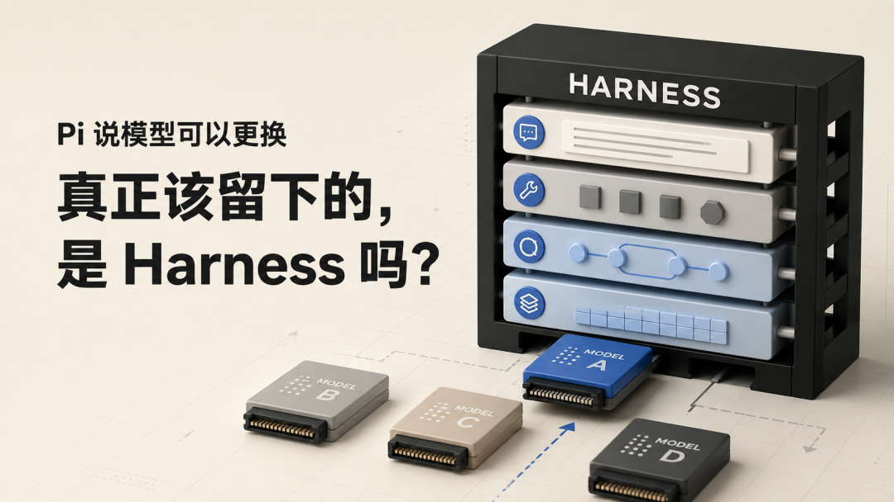
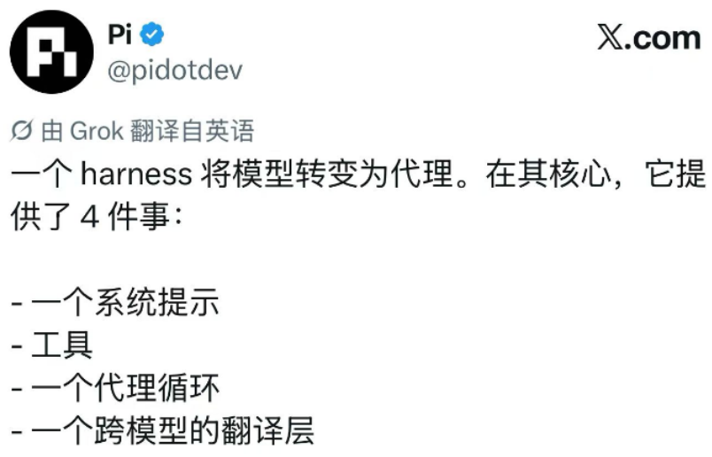
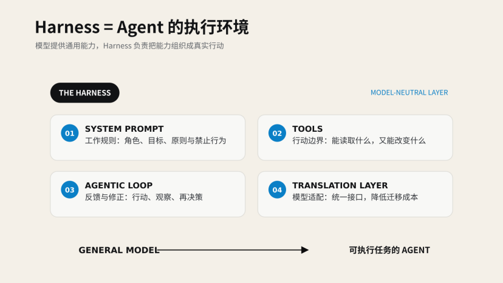
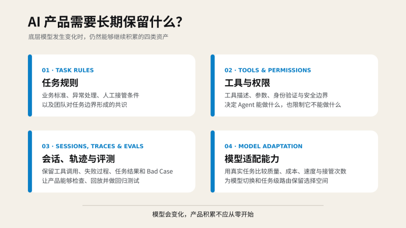

Pi 将 Harness 定义为系统提示词、工具、Agent 循环与翻译层的组合，它决定模型如何行动、如何反馈、如何切换。本文从四层定义出发，结合 DeepSeek Harness 与 Codex 的实测对比，探讨 AI 产品真正该积累的，是模型依赖还是执行环境。

从Pi的四层定义出发，重新理解Agent的执行环境与产品控制权
2026年8月20日，Pi官方账号分享了Earendil的一篇新文章《What is a Harness?》。
文章给出了一个很简洁的定义：Harness通过系统提示词、工具、Agent循环和跨模型翻译层，把一个大模型变成能够执行任务的Agent。
这四个部分看起来并不陌生。系统提示词、工具调用、Agent循环，我们几乎每天都能在AI产品介绍里看到。但我更在意Pi在这套定义之后表达的产品立场：底层模型可以更换，Harness却可以由用户拥有、修改并长期保留。
前不久，我刚体验过DeepSeek Harness。当时最打动我的，是它把Agent的任务拆解、工具调用和执行过程展示了出来。过去我们面对聊天框，只能等待AI给出一个结果；在Harness里，AI正在做什么、卡在哪里、调用了哪些工具，都开始变得可见。
但那次体验也留下了另一个问题。
DeepSeek Harness用大约两个小时完成了一个macOS项目的大部分功能，到了后续的局部修改阶段，却花了一个多小时反复处理字体颜色和文本框交互，仍然没有稳定收敛。后来，我把同一份代码交给Codex，它大约用了半个小时完成了这些修改和其他交互优化。
如果只看最终结果，很容易把它解释成模型能力的差距。但Pi的文章让我重新意识到，我们实际使用的从来不只是一个模型，而是模型与它所处执行环境的组合。
模型负责理解和决策，Harness决定它能看到哪些信息、可以调用哪些工具、如何检查结果、什么时候继续尝试，以及整个过程怎样被记录下来。
所以，问题可能不只是“哪个模型更强”。
当模型越来越容易接入和切换，AI产品真正需要积累的，究竟是对某个模型的依赖，还是一套属于自己的任务规则、工具、会话和执行流程？

Pi对Harness的四层定义
01 Pi所说的Harness，到底多了一层什么？
如果把大模型理解成一个能力很强、但还没有具体岗位的人，那么Harness更像是它进入工作之后所处的完整环境。
这个环境不只是给它一份提示词，然后等待回答。它还要告诉模型以什么身份工作、可以使用哪些工具、工具返回结果后应该怎样继续，以及如何与不同供应商的模型沟通。
Pi将这套环境拆成了四个部分。
第一部分是系统提示词。
它不只是我们在聊天框里输入的那句“你是一名产品经理”，而是一套长期存在的工作说明。它可以规定模型的角色、目标、表达方式、操作原则和禁止行为，也可以告诉模型当前处于什么项目、应该怎样处理文件、遇到风险时是否需要暂停。
如果说用户提示词描述的是“这次要做什么”，系统提示词更接近“你在这里应该怎样工作”。
第二部分是工具。
大模型本身只能根据输入生成内容。它知道网页搜索是什么，却不能凭空完成一次真实搜索；它知道代码应该怎样修改，却不能直接进入用户的项目文件。
Harness会把搜索、读取文件、执行命令、写入代码、发送邮件等能力封装成工具，再把工具的名称、用途和参数告诉模型。模型根据当前任务决定是否调用，Harness则负责真正执行操作，并把结果送回模型。
从产品角度看，工具定义了Agent的行动边界，数量只是表象。
一个只有搜索工具的Agent，可以给出建议，却不能修改业务数据；一个能够读取客户信息、生成报价并发送邮件的Agent，则已经进入真实业务流程。它能做得更多，错误造成的影响也更大。
第三部分是Agent循环。
普通对话通常到模型生成回答就结束了。但在Agent任务里，第一次回答往往只是一次行动。
模型可能先搜索资料，Harness执行搜索，再把结果返回给模型。模型发现资料不完整，于是重新搜索；资料齐全后，它调用代码工具整理数据，再检查生成结果是否符合要求。如果仍然存在缺口，它还会继续修改，直到判断任务已经完成。
这个不断重复的“理解任务—调用工具—观察结果—继续决策”，就是Agent循环。
它让模型不再只是给出一个看起来合理的答案，而是有机会根据真实反馈修正自己的下一步行动。我们在DeepSeek Harness中看到的任务轨迹、工具调用和执行进度，正是这个循环在产品界面上的呈现。
第四部分是翻译层。
不同模型供应商有不同的接口、工具调用格式、上下文规则和返回结构。翻译层负责把Harness中的任务、工具和会话转换成各个模型能够理解的形式，再把模型的结果转换回统一的执行流程。
Pi因此可以连接多家模型供应商，也允许用户在同一段会话中更换模型。
如果换成更接近产品设计的语言，这四部分分别对应：系统提示词决定工作规则，工具决定行动范围，Agent循环决定反馈与修正方式，翻译层决定模型选择和迁移能力。
这四部分共同组成了一套执行环境。系统提示词和会话为模型提供上下文，工具把模型的判断变成行动，Agent循环把行动结果重新送回模型，翻译层则负责适配底层模型的差异。

Harness将模型组织成Agent
因此，Harness不是在模型外面包装一层界面，也不是多写几段提示词。
模型提供通用能力，Harness把这种能力组织成一个可以进入真实任务、持续行动并接受反馈的产品。
02 模型没换，为什么成本和结果还是变了？
如果Harness只是模型外面的一层包装，那么更换Harness理论上不应该明显改变结果。模型能力相同，任务也相同，最多只是界面和操作方式有所区别。
但现实并非如此。
2026年7月，Databricks公布了一项Coding Agent基准测试。他们没有直接使用已经被大量讨论的公开榜单，而是从自家数百万行代码库中选择真实任务，覆盖Python、Go、TypeScript、Scala等语言，再比较不同模型与Harness的组合。
测试中有一个值得注意的发现：当研究人员使用相同模型、相同思考强度，只更换模型运行所在的Harness时，部分任务的单次成本相差超过两倍，但完成质量保持相近。
差异主要来自上下文。
根据Databricks的记录，Pi每轮发送给模型的上下文大约少了三倍。它维持了一个更紧凑的工作信息集合，也使用了更少的运行轮次完成任务。
一次Agent任务的成本，由此无法简化成“模型单价× Token数量”。
Harness会决定每轮把多少历史消息重新发送给模型、加载哪些项目文件、保留多少工具定义、什么时候压缩会话，以及一次失败后需要重复多少轮。即使底层模型没有改变，这些设计也会继续影响任务成本和收敛速度。
这有点像让同一个人进入两家工作方式完全不同的公司。
他的基础能力没有变化，但一家给出了清晰的任务背景、必要的工具和及时反馈；另一家则在每次沟通时都重新塞给他大量资料，还让他在不相关的信息里寻找重点。最后，两边可能都把工作做完了，但花费的时间和沟通成本不会相同。
当然，这项测试不能证明Pi在所有任务中都更好。
Databricks也特意强调，结论不是“简单的Harness永远更便宜”，更不是“模型厂商提供的原生Harness一定更差”。测试发生在特定代码库、任务分布和配置条件下，换一个业务环境，结果可能改变。
需要关注的是，模型选择只是Agent效果的一部分。
Anthropic在介绍Agent评测时，也使用了相近的判断。他们将Agent Harness定义为负责处理输入、组织工具调用并返回结果的系统，并明确指出，评估一个Agent，实际评估的是模型与Harness共同工作的表现。
这也让我重新看待之前那次DeepSeek Harness的体验。
在最初两个小时里，DeepSeek Harness完成了macOS项目的大部分功能。它能够理解需求、拆解任务、调用工具，并快速把一个想法变成可以运行的Demo。
但进入局部优化后，情况发生了变化。
我要求它调整字体颜色和文本框交互，后续一个多小时里，它多次修改仍然没有稳定解决。有时修好了一个问题，又破坏了另一个已经能够正常工作的部分。最后，我把同一份代码交给Codex，Codex大约用了半个小时完成了文本框改写、字体颜色修正和其他交互优化。
这段经历不能证明Codex整体强于DeepSeek Harness。
首先，我使用的是两个不同的产品，背后不只有模型差异，还包括系统提示词、工具、上下文管理和执行策略的差异。其次，从零生成一个项目，与在已有代码上定位局部问题，本身就是两类任务。前者更考验启动和搭建能力，后者更考验理解现状、控制修改范围以及通过反馈逐步收敛。
如果只根据最终结果给模型排出高低，反而会忽略影响产品体验的执行过程。
对用户来说，“用了什么模型”只是一个相对容易看见的标签。他实际感受到的，是Agent能否记住之前的要求、是否会重复读取无关内容、修改后会不会主动检查、失败后能否调整策略，以及什么时候知道自己已经完成任务。
这些能力有一部分来自模型，也有一部分由Harness提供。
因此，AI产品的评估单位不应该只是某个模型，也不应该只比较模型在公开榜单上的得分。更接近真实产品的评估方式，应该是“模型× Harness ×具体任务”。
模型决定它大致能做到什么，Harness决定它如何开展工作，而具体任务决定这套组合是否真的合适。脱离其中任何一项谈Agent能力，都可能得到一个看起来清楚、实际却无法指导产品选择的结论。
03 Pi为什么刻意少做功能？
既然Harness会影响Agent的成本和结果，一个看起来很自然的产品方向，就是继续给它增加能力。
加入任务规划，让Agent先想清楚再行动；加入多个子Agent，让它们并行完成不同工作；加入更多工具，让它能搜索、写代码、操作浏览器、调用业务系统；再加入长期记忆、待办列表和权限确认，让整个流程看起来更完整。
功能越多，Agent似乎就越强。
Pi选择的却是相反的方向。
Pi将自己定位为一个极简的Agent Harness。根据Earendil的介绍，它默认只有四个基础工具，系统提示词和工具定义加起来不到1000个Token。它也没有把Plan Mode、Sub-agent、MCP、内置待办和后台Bash等能力直接塞进核心产品。
如果用户需要这些功能，可以通过扩展、Skill、提示词模板和第三方Package添加，也可以直接让Pi为自己编写一项新能力，重新加载后继续使用。
这种设计容易给人一种“功能还没做完”的感觉。
毕竟，其他Coding Agent已经把规划、多Agent协作、权限控制和各种工具集成做成了标准能力，Pi却告诉用户：需要什么就自己安装，或者自己做一个。
但从上下文的角度看，Pi的极简并不只是少做功能，它更像是在控制Agent每次工作时需要背负的信息量。
对于普通软件来说，一个用户暂时不用的功能，可能只是藏在菜单里。但对于Agent来说，如果一项能力对应的工具说明、使用规则和执行要求被长期放进上下文，它就会在每一轮调用中重复出现。
模型不仅要读取用户当前的任务，还要理解这些工具分别能做什么、什么时候使用、参数如何填写，以及它们之间是否存在冲突。
工具越多，不代表模型越容易找到正确工具。
有时候，模型会因为两项工具功能相近而反复选择；有时候，它会过早进入一个复杂流程；还有时候，一项用户根本不会使用的功能，却在每一轮任务中持续消耗上下文。
功能少不一定更好，功能多也不再只有开发和界面成本。Agent产品需要重新计算每项功能的代价。
过去增加一个功能，产品团队主要计算开发成本、界面复杂度和用户学习成本。现在还需要多算一笔：它会不会增加上下文长度、工具选择难度、执行轮次和失败路径？
Pi的扩展方式，在Shopify的Autoresearch实践中表现得比较直观。
Shopify工程师David Cortés想让Agent持续优化一个可以测量的工程指标。他没有等待Pi官方发布“自动研究模式”，而是直接让Pi为自己创建一个扩展。
不到半个小时，第一个版本就能够工作。
这套扩展先选择一个明确指标，测量当前基线，然后让Agent提出优化假设、修改代码并运行测试。如果结果优于基线，就保留修改；如果运行失败或性能变差，就放弃这次尝试，再进入下一轮。
相比一句宽泛的“帮我优化项目”，这套Harness给Agent增加了一个明确的优化目标、一种可以自动判断好坏的标准，以及一套失败后能够回退并继续尝试的循环。
Autoresearch把任务目标、验证方式和循环规则写进执行环境，由此改善了Agent的工作结果。
这也是Pi的极简主义更值得产品经理关注的地方。
它没有默认假设所有用户都需要同一套复杂流程，而是先保留少量稳定的基础能力，再让具体工作流根据任务生长出来。复杂度只有在能够改善结果时，才被加入Harness。
不过，这种设计也有明显代价。
极简核心降低了默认上下文负担，却把更多配置、筛选和维护工作交给了用户。开发者可以编写扩展、阅读文档、搭建沙箱，普通用户未必愿意这样做。企业团队还要考虑扩展的版本兼容、安全审查和长期维护，远不只是“安装一个插件”那么轻松。
对于长周期、高风险的任务，计划、权限、检查点和多Agent协作也可能是必要结构。为了保持极简而删除这些能力，并不会自动带来更好的结果。
Pi的产品思路可以概括为：每增加一层Agent能力，都应该证明它值得占用更多上下文、执行步骤和维护成本。
AI产品经理需要计算的，也不再只是模型每百万Token的价格，而是完成一项真实任务需要多少轮调用、多少上下文、多少次失败，以及最后需要多少人工接管。
一项看起来很强大的Agent功能，如果没有提高完整任务的成功率，只是让执行过程更长、更贵，那么它可能只会让Harness变得更重。
04 “换模型”真的像换零件一样简单吗？
在Pi对Harness的四层定义中，翻译层可能是最容易被忽略的一层。
系统提示词、工具和Agent循环都能直接影响任务过程，翻译层却更像一项藏在后台的基础能力。用户平时很少看见它，只有在更换模型时，才会感受到它是否存在。
Pi目前支持接入多家模型供应商和大量模型。用户可以在同一段会话中切换模型，不必因为更换了Anthropic、OpenAI、Google或开源模型，就同时更换整套工具、界面和工作方式。
翻译层负责处理其中的差异。
不同模型供应商拥有各自的请求格式、消息结构、工具调用协议和流式输出方式。Harness需要把系统提示词、用户消息、工具定义和历史会话转换成当前模型能够接收的格式，再把模型返回的工具调用和结果转换回自己的执行流程。
从产品架构上看，这很像在模型与业务之间增加了一层适配器。
上层的任务规则、工具和用户界面不需要直接绑定某一个模型。更换底层供应商时，产品团队可以优先调整适配层，而不是重新搭建整个Agent。
这也是Earendil在文章中不断强调“用户拥有Harness”的原因。
如果系统提示词、工具、扩展和历史会话都留在自己的Harness中，用户理论上可以根据任务、成本和效果选择不同模型。某个模型更适合复杂推理，就在需要时调用它；另一个模型成本更低，就用来处理简单任务；本地开源模型满足隐私要求，则可以让部分工作留在自己的设备上。
模型变了，工作环境仍然保留。
但“可以切换模型”与“模型可以无损替换”，是两件不同的事。
翻译层能够统一接口，却无法抹平模型本身的差异。
不同模型拥有不同的上下文长度、工具调用习惯和指令遵循方式。面对同一个文件修改工具，有的模型会先读取相关代码再行动，有的模型可能直接尝试修改；有的模型擅长在长任务中维护目标，有的模型则更容易在多轮调用后偏离最初要求。
模型与原生Harness之间也可能形成特殊适配。
某些模型在训练或后训练阶段，已经学习了特定工具名称、编辑格式和反馈结构。把它放进另一套Harness后，即使翻译层成功转换了接口，它也不一定能发挥出与原生产品相同的效果。
更难迁移的，是一次Agent任务中逐渐形成的状态。
在简单聊天里，会话看起来只包含用户问题和模型回答。但在复杂Agent任务中，历史还可能包括工具调用、搜索资料、代码执行结果、压缩后的上下文、子Agent之间的消息、文件引用和模型未公开的推理状态。
其中一部分内容并不一定真正保存在用户手里。
Earendil在另一篇关于会话可迁移性的文章中提到，一些模型接口会返回与供应商绑定的加密状态、会话ID或文件引用。用户可以继续把这些信息交还给原来的供应商，却无法独立读取，也难以交给另一家模型继续处理。
从使用体验看，会话仍然可以正常延续；从所有权角度看，用户本地保存的内容可能只是一份不完整记录。
模型迁移还要求新的模型能够接手原有任务，API成功接收请求只是起点。
新的模型还需要知道之前做过什么、调用过哪些工具、形成了哪些结论、哪些方案已经失败，以及当前任务应该从哪里继续。它不需要生成完全相同的下一个回答，但至少应该能够理解已有过程，并在不依赖旧供应商的情况下接手工作。
Pi对此给出的方向，是把会话保存在本地，并用树状结构记录不同分支。用户可以回到过去的某个节点继续，也可以在一段会话中更换模型。Pi的上下文压缩结果同样以可读文本保存，减少它对单一模型的绑定。
这些设计降低了迁移难度，但仍然无法保证切换前后的表现完全一致。
因此，“模型可以更换”更适合作为一种产品架构目标，而不是当前已经完全实现的标准能力。
对AI产品团队来说，翻译层的价值在于让模型选择不再与全部业务逻辑死死绑定。它降低了更换供应商的成本，为模型路由、成本优化和风险控制留下空间，却不会让所有模型变成能力相同的标准零件。
这也解释了为什么Harness会逐渐成为一种需要长期积累的产品资产。
当模型发生变化时，如果任务规则、工具、会话记录和评测标准都要跟着推倒重来，产品实际上仍然被底层供应商控制。这些内容能够相对独立地保留下来，团队才有选择模型的余地。
但这种选择从来不是免费的。
想获得更强的可迁移性，产品团队就必须主动记录完整轨迹、减少对供应商私有状态的依赖，并为不同模型建立适配和评测机制。用户获得的不是“一键换模型”的轻松承诺，而是避免把整个AI产品押在一家供应商身上的可能性。
05 AI产品真正应该留下的四类资产
如果把Harness理解成Agent的执行环境，那么对产品经理来说，问题就不再是“要不要自己开发一个Pi”。
大多数团队没有必要从头构建通用Harness，也不一定需要把产品做成可以自由安装扩展的开发工具。Pi对产品控制权的拆分更值得借鉴：当底层模型发生变化时，哪些东西应该继续留在产品里？
我认为至少有四类资产。
1.任务规则
第一类是产品对任务的理解。
它包括系统提示词，也包括业务规则、操作限制、异常处理方式和人工接管条件。
例如，一个AI销售陪练需要知道自己面对的是新人还是在岗销售，需要按照什么标准评价对话，哪些表达属于业务红线，以及什么时候只能提供建议、不能代替培训师完成认证。
这些内容不是模型天然知道的。
模型可以理解销售、客户和沟通，但它不知道某家公司的具体业务要求。产品团队需要把业务经验整理成模型能够执行的规则，再通过实际任务不断修正。
如果这些规则全部依赖某一家模型的特殊提示方式，换模型就意味着重新调试整个产品。更稳妥的做法，是把稳定的业务规则与模型适配部分分开管理，记录版本变化，并通过评测确认每次修改是否造成新的问题。
团队需要积累的是对任务边界逐渐形成的共识，一段写得很长的Prompt只是它的载体之一。
2.工具与权限
第二类是Agent与真实业务系统之间的连接方式。
一个Agent能否创造实际价值，往往取决于它是否能够读取正确数据、调用正确工具，并把结果写回工作流程。但当Agent获得行动能力后，产品也必须回答另一个问题：它可以做到哪一步？
搜索公开资料与修改客户数据，风险并不相同；生成一封邮件与直接发送邮件，也不应该拥有相同的确认机制。
因此，工具资产不只是接口数量，还包括工具描述、参数设计、身份验证、权限范围、失败处理和人工确认节点。
Pi的设计恰好暴露了“拥有Harness”的另一面。
Pi官方说明中明确提到，它默认没有内置用于限制文件系统、进程、网络和凭证访问的权限系统。Pi会继承启动它的用户和进程权限。如果需要更强的安全边界，用户需要自行使用容器或沙箱。
这不是一个可以忽略的技术细节。
用户获得了修改Harness和扩展工具的自由，也要承担工具执行错误、扩展安全和凭证泄露的风险。所谓控制权，不只是“我可以让Agent做更多”，还包括“我能限制它不能做什么，并且知道出错后谁负责”。
3.会话、轨迹与评测
第三类是Agent在长期使用中留下的过程数据。
传统聊天产品容易把会话理解成用户问题与模型回答。但对于执行任务的Agent，一段完整记录还应该包括调用过哪些工具、工具返回了什么、修改了哪些文件、哪些方案已经失败，以及最后是否真的完成了任务。
这些轨迹能解决三个问题。
当Agent出错时，团队可以找到错误发生在哪一步；当用户要求继续任务时，新的模型能够理解之前的进展；当产品修改系统提示词或更换模型时，历史任务可以成为回归测试。
这里需要区分“模型说自己完成了”与“任务实际完成了”。
一个订票Agent在最终回答里表示“已经预订成功”，并不能证明数据库中真的存在订单。一个Coding Agent表示“问题已经修复”，也不能代替编译、测试和界面检查。
因此，评测标准应该尽量落在任务结果上，而不是只评价最终回答看起来是否合理。
用户反馈中反复出现的失败案例，也不应该修复后就被遗忘。团队可以把它们转成测试集：再次更换模型、修改工具或调整Harness时，重新运行这些任务，检查旧问题是否复发。
当这些轨迹只能保存在供应商服务器，或者只能通过一个无法解释的会话ID继续使用时，产品很难积累自己的经验。能够检查、导出、重放、审计和删除，才能让会话脱离平台提供的临时状态。
4. 模型适配能力
第四类是选择和更换模型的能力。
模型适配能力不以接入数量衡量。产品团队要知道不同任务应该使用什么模型，而不是只在界面上增加一个模型下拉菜单。
简单的信息提取可能不需要最昂贵的模型；复杂的代码修改、业务判断和长周期任务，则可能更依赖强模型的推理与上下文能力。某些任务更看重速度，某些任务更看重稳定性，还有一些任务因为隐私要求，只能在本地或指定环境中运行。
产品团队需要基于自己的真实任务，记录不同“模型× Harness”组合的成功率、任务成本、执行时长、调用轮数和人工接管次数。
有了这些记录，模型路由才能建立在可以验证的任务差异上，而不是简单地把便宜任务交给小模型、复杂任务交给大模型。

AI产品需要长期保留的四类资产
这四类资产放在一起，才构成一个产品能够长期保留的Harness。
任务规则保存了业务判断，工具与权限决定Agent的行动边界，会话和评测让产品能够从失败中积累经验，模型适配则保留了选择供应商的空间。
对于AI产品经理而言，这也会改变产品建设的顺序。
在选择模型之前，先挑出一组真实且具有代表性的任务；明确什么结果才算完成，什么错误不可接受；再分别测试模型和Harness，避免一次同时改变多个变量。评测时不能只看最终回答，还要记录任务成功率、总成本、执行轮数和人工接管情况。
对于重复发生、流程稳定的企业任务，这套积累尤其重要。因为产品价值不只来自某一次回答，而是来自它能否长期按照业务规则工作，并在模型升级、价格变化或供应商调整后继续运行。
对于一次性问答和轻量聊天，用户可能并不关心Harness属于谁。封闭产品提供的开箱即用体验，往往比迁移能力更有吸引力。
所以，用户是否需要拥有自己的Harness，并没有一个适用于所有产品的答案。
但对准备把Agent放进真实业务流程的团队来说，有一个问题应该尽早回答：当底层模型被替换以后，产品已经积累下来的业务规则、工具连接、失败经验和评测标准，还能留下多少？
如果答案是“几乎都要重新开始”，那么团队拥有的可能只是一个模型入口，还没有真正拥有自己的Agent产品。
结语：真正需要积累的，不只是模型能力
写完这篇文章，我对之前那次DeepSeek Harness体验留下的问题，有了一个更完整的理解。
当时我最先看到的是过程透明：Agent不再躲在聊天框后面，任务拆解、工具调用和失败过程都能被用户看见。Pi的文章又把问题往前推了一步。过程能不能被看见很重要，过程由谁掌握、能不能被带走，同样重要。
如果任务规则、工具配置、会话记录和评测标准始终绑定在某一家模型或某一个封闭产品中，用户看到再多执行轨迹，也没有真正获得选择权。相反，如果这些内容能够独立保存，即使底层模型发生变化，产品已经形成的工作方式仍然可以继续积累。
这并不意味着模型已经不重要。模型仍然决定能力上限，也会直接影响复杂任务中的理解、判断和收敛。Harness解决的是另一个问题：如何让这种能力以可以控制、可以检查、可以迁移的方式进入真实工作。
拥有自己的Harness，也不是一句轻松的产品口号。更多控制权会带来更多安全、维护和评测责任。对多数普通用户来说，封闭产品的便利可能比迁移自由更有价值；对准备把Agent放进长期业务流程的团队来说，这笔责任却很难一直交给模型供应商。
下一次讨论模型选型时，产品团队或许可以先问一个更具体的问题：如果明天更换底层模型，今天积累的任务规则、历史会话、工具连接和评测标准，还能留下多少？
这个答案，比界面上显示的模型名称，更能说明团队是否真正拥有自己的AI产品。